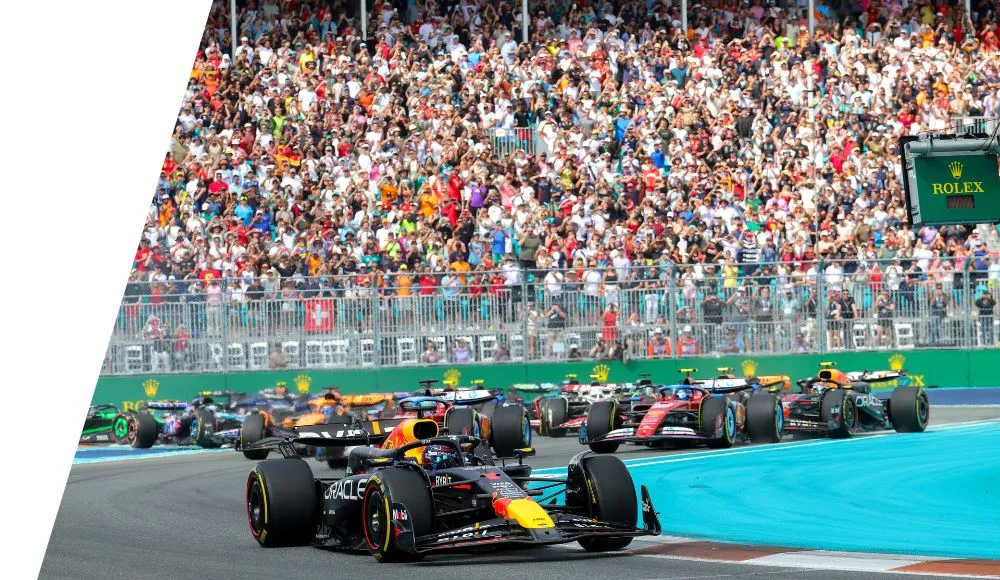

El domingo es el mejor dia para pasarla bien con amigos y familiares. Para aprovechar bien el día, es importante armar un horario
que no se estorbe entre la comida y las carreras.
A continuacion, te dejo la guía de como hacer una buena comida para irte preparando antes de la carrera.
RecetaObviamente, tambien te dejo el horario asi no te perdes la largada, la mejor parte!
Horario
La Fórmula 1 cuenta con 24 carreras en este año 2026. El calendario incluye una variedad de circuitos en todo el mundo, desde los tradicionales hasta los nuevos.
Algunas de las carreras más destacadas incluyen el Gran Premio de Mónaco, el Gran Premio de Italia en Monza, el Gran Premio de Brasil en Interlagos, y por supuesto, el Gran Premio de Miami.
Cada carrera ofrece una experiencia única para los fanáticos, con emocionantes competiciones y momentos memorables a lo largo de la temporada.
Un ejemplo de uno de tantos circuitos, es el de Miami, que se caracteriza por su diseño urbano. El circuito de Miami es conocido por largas rectas y curvas dificiles, lo que lo convierte en un lugar emocionante para los pilotos y los espectadores.
Además, el Gran Premio de Miami suele atraer a una gran cantidad de personas, creando un ambiente único durante el fin de semana de la carrera.